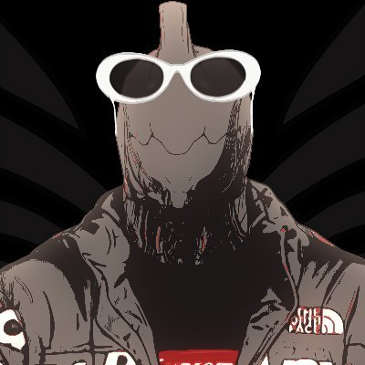

Fundamentals
Movement First
Conclave punishes standing still. Learn how your frame accelerates, resets angles and uses vertical space before chasing perfect loadouts.
Separate PvP Rules
Do not assume PvE tuning applies. Weapons, abilities, mods and survivability behave around the PvP rule set and match pacing.
Watch Real Matches
Archives and streams teach spacing faster than lists. Use VODs to understand where fights happen and when players disengage.
Practice Path
- Open Conclave, inspect your PvP loadout, and keep the first build simple.
- Play or watch Annihilation first; it makes movement and duels easier to read.
- Open the Warframe PvP Discord page, then use discord.gg/conclave to find active players and ask precise questions.
- Watch Gwanox live on Twitch or review the VOD archive.
- Use Gwan's Warframe Market profile when you need Conclave mod inventory.
Resource Index
PvP Hub
Warframe PvP overview
PvP Discord
Conclave Reignited
Twitch
Live matches
Clips
Short PvP videos
This page is intentionally concise. The goal is to get a new or returning player from search to the right next action without burying them in trivia.